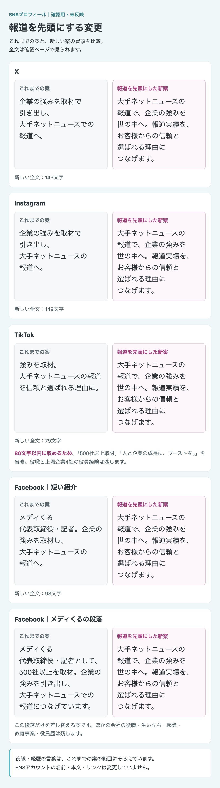

リブランディングマン。
人と企業の成長に、ブーストを。
企業の強みを取材し、報道へ。
お客様からの信頼と選ばれる理由へ。
プロフィールから既存のLPへ。
取材・報道の詳細と無料相談へ。

X・Instagramは紹介文を更新し、公開表示で確認済みです。TikTokはアプリでの更新待ち、Facebookは本人ログイン待ちです。名前と既存リンクは変更していません。
X
@uru_navi更新前に確認した表示
2026/11/16の公開表示を確認
表示名漆沢祐樹｜リブランディングマン
自己紹介大手ネットニュースを活用した企業ブランディング「メディくる」代表。企業の強みを取材し、ニュース掲載からSEO・AI検索対策まで支援しています。上場企業4社で役員を経験し、企業再生にも携わっています。人と企業の成長に、ブーストを。
プロフィールのリンクはmedikuru.me。
採用した文案（R3）
表示名（個人ブランドを維持）漆沢祐樹｜リブランディングマン
自己紹介大手ネットニュースの報道で、企業の強みを世の中へ。報道実績を、お客様からの信頼と選ばれる理由につなげます。メディくる代表取締役・記者。上場企業4社の役員経験／500社以上を取材。PR・SEO・AI検索対策の戦略から実行まで支援。企業再生にも携わっています。人と企業の成長に、ブーストを。
143文字／この案の目安 160文字以内
報道を最初に伝え、お客様からの信頼と選ばれる理由につなげる価値を先に示します。役職・経験を続け、支援内容の詳細は媒体の文字数に合わせます。
主リンクは「取材・報道の詳細／無料相談」→既存LPを推奨。現在のmedikuru.meの行き先も確認しながら、既存リンクの扱いを決める案です。
SNSに設定する計測用URL案
Xのプロフィール経由と分かる目印を付けます。
https://line.medikuru.com/lp/?utm_source=x&utm_medium=profile&utm_campaign=personal_profile_20261116下のボタンはLPの表示確認用です。計測用の目印は付けていません。
前の提案（R2）と採用した文案（R3）を比較
文案の比較です。実際の反映状況は各SNSの見出しと公開画面で確認できます。
前の提案（R2）
企業の強みを取材で引き出し、大手ネットニュースでの報道へ。メディくる代表取締役・記者。上場企業4社で役員を経験／500社以上を取材。報道実績をお客様からの信頼と選ばれる理由につなげ、PR・SEO・AI検索対策の戦略づくりから実行まで支援。企業再生にも携わっています。人と企業の成長に、ブーストを。
148文字
採用した文案（R3）
大手ネットニュースの報道で、企業の強みを世の中へ。報道実績を、お客様からの信頼と選ばれる理由につなげます。メディくる代表取締役・記者。上場企業4社の役員経験／500社以上を取材。PR・SEO・AI検索対策の戦略から実行まで支援。企業再生にも携わっています。人と企業の成長に、ブーストを。
143文字
更新前に確認した表示
2026/11/16の公開表示を確認
表示名漆沢祐樹｜リブランディングマン
自己紹介大手ネットニュースを活用した 企業ブランディング「メディくる」代表 ニュース掲載からSEO・AI検索対策まで 上場企業4社で役員を経験｜企業再生 人と企業の成長に、ブーストを。
現状はX・Wikipedia・YouTube・TikTokの4リンク。会社LPへのリンクがありません。
採用した文案（R3）
表示名（個人ブランドを維持）漆沢祐樹｜リブランディングマン
自己紹介大手ネットニュースの報道で、企業の強みを世の中へ。 報道実績を、お客様からの信頼と選ばれる理由につなげます。 メディくる代表取締役・記者。 上場企業4社の役員経験／500社以上を取材。 PR・SEO・AI検索対策の戦略から実行まで支援。 企業再生にも携わっています。 人と企業の成長に、ブーストを。
149文字／この案の目安 150文字以内
報道を最初に伝え、お客様からの信頼と選ばれる理由につなげる価値を先に示します。役職・経験を続け、支援内容の詳細は媒体の文字数に合わせます。
先頭に「取材・報道の詳細／無料相談」→既存LPを追加。X・Wikipedia・YouTube・TikTokの4リンクは維持します。
SNSに設定する計測用URL案
Instagramのプロフィール経由と分かる目印を付けます。
https://line.medikuru.com/lp/?utm_source=instagram&utm_medium=profile&utm_campaign=personal_profile_20261116下のボタンはLPの表示確認用です。計測用の目印は付けていません。
残すリンク：X／Wikipedia／YouTube／TikTok。変更・削除はしていません。
前の提案（R2）と採用した文案（R3）を比較
文案の比較です。実際の反映状況は各SNSの見出しと公開画面で確認できます。
前の提案（R2）
企業の強みを取材で引き出し、大手ネットニュースの報道へ。 メディくる代表取締役・記者 上場企業4社の役員経験／500社以上を取材 報道実績を、お客様からの信頼と選ばれる理由に。 PR・SEO・AI検索対策の戦略・実行／企業再生 人と企業の成長に、ブーストを。
129文字
採用した文案（R3）
大手ネットニュースの報道で、企業の強みを世の中へ。 報道実績を、お客様からの信頼と選ばれる理由につなげます。 メディくる代表取締役・記者。 上場企業4社の役員経験／500社以上を取材。 PR・SEO・AI検索対策の戦略から実行まで支援。 企業再生にも携わっています。 人と企業の成長に、ブーストを。
149文字
TikTok
@urushizawa更新前に確認した表示
2026/11/16の公開表示を確認
表示名漆沢祐樹｜リブランディングマン
自己紹介大手ネットニュースを活用した企業ブランディング「メディくる」代表｜SEO・AI検索対策／企業再生｜人と企業の成長に、ブーストを。
Webリンクの現状は確認中です。
採用した文案（R3）
表示名（個人ブランドを維持）漆沢祐樹｜リブランディングマン
自己紹介大手ネットニュースの報道で、企業の強みを世の中へ。報道実績を、お客様からの信頼と選ばれる理由につなげます。メディくる代表取締役・記者。上場企業4社の役員経験。
79文字／この案の目安 80文字以内
報道を最初に伝え、お客様からの信頼と選ばれる理由につなげる価値を先に示します。役職・経験を続け、支援内容の詳細は媒体の文字数に合わせます。
Webリンクを置ける現在の設定であれば、「取材・報道の詳細／無料相談」→既存LPを推奨します。
SNSに設定する計測用URL案
TikTokのプロフィール経由と分かる目印を付けます。
https://line.medikuru.com/lp/?utm_source=tiktok&utm_medium=profile&utm_campaign=personal_profile_20261116下のボタンはLPの表示確認用です。計測用の目印は付けていません。
前の案は80文字、今回の案は79文字です。今回のTikTok本文では「強みを取材」「500社以上取材」「人と企業の成長に、ブーストを。」を省き、報道と信頼の説明を先頭にしています。表示名は維持する案です。
前の提案（R2）と採用した文案（R3）を比較
文案の比較です。実際の反映状況は各SNSの見出しと公開画面で確認できます。
前の提案（R2）
強みを取材。大手ネットニュースの報道を信頼と選ばれる理由に。メディくる代表取締役・記者｜上場企業4社の役員経験／500社以上取材｜人と企業の成長に、ブーストを。
80文字
採用した文案（R3）
大手ネットニュースの報道で、企業の強みを世の中へ。報道実績を、お客様からの信頼と選ばれる理由につなげます。メディくる代表取締役・記者。上場企業4社の役員経験。
79文字
更新前に確認した表示
2026/11/16の公開表示を確認
表示名漆沢 祐樹
自己紹介大手ネットニュースを活用した企業ブランディング「メディくる」代表。上場企業4社で役員を経験し、企業再生にも携わっています。人と企業の成長に、ブーストを。
個人プロフィールとして、株式会社パーソナルナビなどの活動も表示されています。実名と活動の広がりは維持します。
採用した文案（R3）
表示名（実名を維持）漆沢 祐樹
自己紹介大手ネットニュースの報道で、企業の強みを世の中へ。報道実績を、お客様からの信頼と選ばれる理由につなげます。メディくる代表取締役・記者。上場企業4社の役員経験／500社以上を取材。企業再生にも従事。
98文字／この案の目安 101文字以内
Facebookは現在の実名表記を維持。ブランド名を実名欄へ追加する案にはしません。
報道を先頭にした短い自己紹介へ。詳しい紹介欄はメディくるの既存段落だけを差し替え、他社の役職・経歴・その他の既存段落は維持します。
既存プロフィールのWebリンク欄へ「取材・報道の詳細／無料相談」→既存LPを推奨。現在設定されているリンクを確認してから配置する案です。
SNSに設定する計測用URL案
Facebookのプロフィール経由と分かる目印を付けます。
https://line.medikuru.com/lp/?utm_source=facebook&utm_medium=profile&utm_campaign=personal_profile_20261116下のボタンはLPの表示確認用です。計測用の目印は付けていません。
Facebook：メディくるの差し替え段落案
紹介欄全体を置き換える案ではありません。株式会社パーソナルナビやVIXTONなど、他社の役職・経歴の既存段落はそのまま残します。
大手ネットニュースの報道で、企業の強みを世の中へ。報道実績を、お客様からの信頼と選ばれる理由につなげます。メディくる代表取締役・記者として、上場企業4社での役員経験と500社以上の取材経験を生かし、御社ならではの強みを引き出します。報道実績をPR・複数メディアへ広め、SEO・AI検索対策の戦略づくりから実行・分析・改善まで支援します。
前の提案（R2）と採用した文案（R3）を比較
文案の比較です。実際の反映状況は各SNSの見出しと公開画面で確認できます。
前の提案（R2）
メディくる代表取締役・記者。企業の強みを取材し、大手ネットニュースの報道へ。報道実績を、お客様からの信頼と選ばれる理由につなげます。上場企業4社の役員経験／企業再生。人と企業の成長に、ブーストを。
98文字
採用した文案（R3）
大手ネットニュースの報道で、企業の強みを世の中へ。報道実績を、お客様からの信頼と選ばれる理由につなげます。メディくる代表取締役・記者。上場企業4社の役員経験／500社以上を取材。企業再生にも従事。
98文字
以下もメディくるの段落だけの比較です。他社の役職・経歴の既存段落は対象にしていません。
R2の段落案
メディくる代表取締役・記者として、500社以上を取材。企業の強みを引き出し、大手ネットニュースでの報道につなげています。報道実績をPR・複数メディアへ広め、SEO・AI検索対策と分析・改善を通じて、お客様からの信頼と選ばれる理由づくりを支えます。
123文字
R3の段落案
大手ネットニュースの報道で、企業の強みを世の中へ。報道実績を、お客様からの信頼と選ばれる理由につなげます。メディくる代表取締役・記者として、上場企業4社での役員経験と500社以上の取材経験を生かし、御社ならではの強みを引き出します。報道実績をPR・複数メディアへ広め、SEO・AI検索対策の戦略づくりから実行・分析・改善まで支援します。
168文字
計測用URLはプロフィールの設定案です。LP閲覧とLINEボタンのクリックを媒体ごとに確認する目印に使います。LINE登録・相談申込までのSNS別集計は、別途確認が必要です。
文字数は改行・句読点を含むこの原稿の数え方です。各SNSの現在の入力上限を確認した表示ではありません。